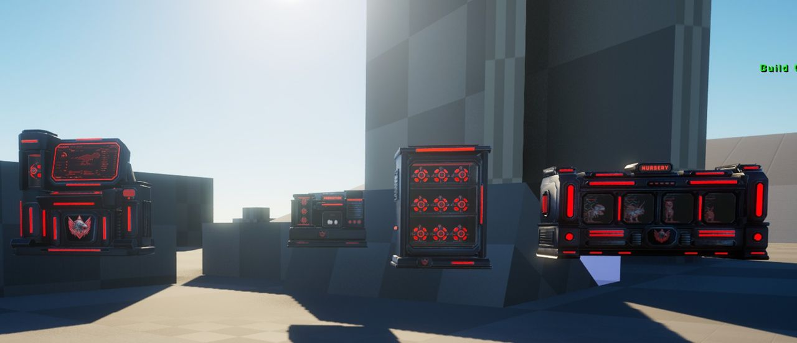
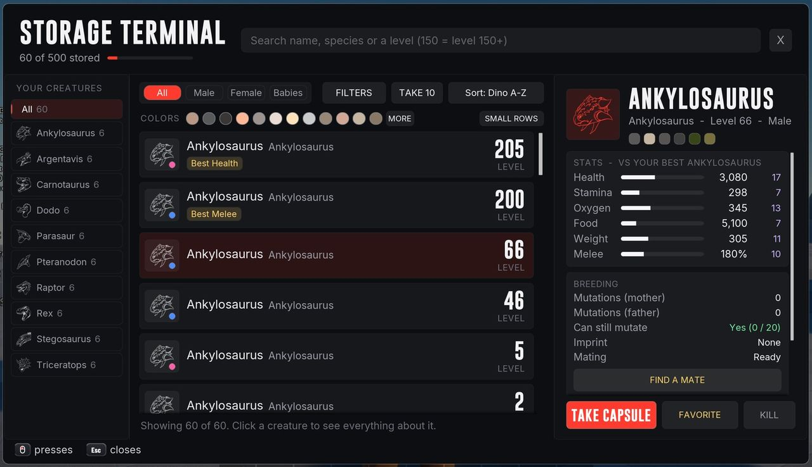
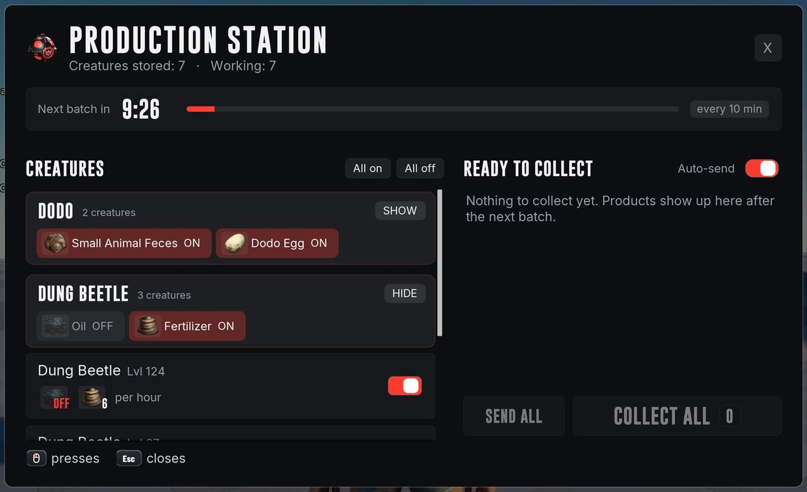
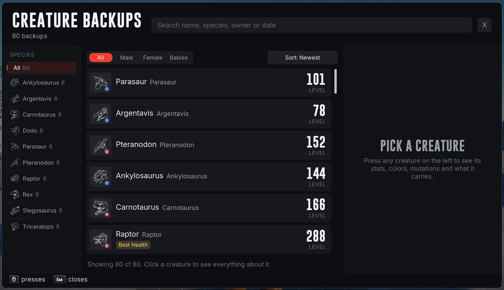
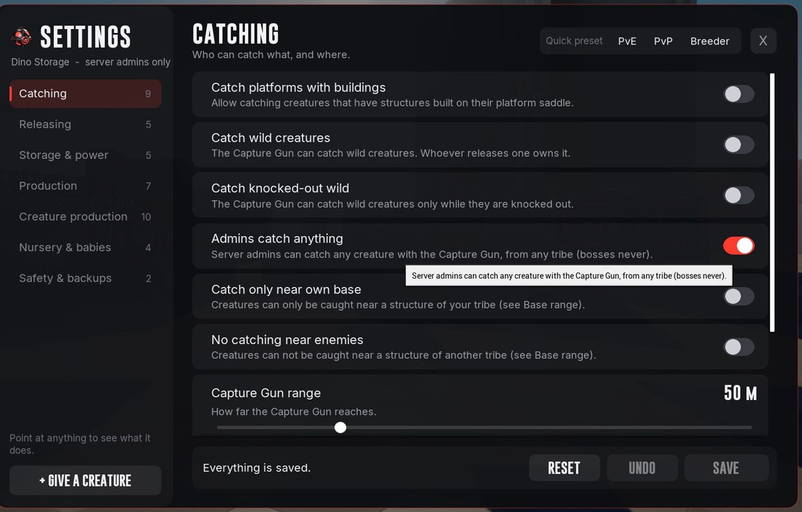

BLACKWIRE
BLACKWIRE
BLACKWIRE
BLACKWIRE
Catch tames in capsules, store up to 500 in a terminal, and put stored creatures to work.

| Item | What it does |
|---|---|
| BlackWire Capsule | Throw it at your tame to catch it. Throw it again to release it. |
| Capture Gun | Catches your tames from up to 50 m. |
| Storage Terminal | Up to 500 creatures in one screen, with search, sorting and favourites. Its wheel can store all your capsules, turn cryopods into capsules and swap in a capsule after a catch. |
| Capsule Box | 72 slots. Your cryopods turn into capsules in one step. |
| Nursery | Newborn babies within 30 m go into an empty capsule inside it. Fertilized eggs within 30 m stay healthy until they hatch. |
| Production Station | Stored creatures make items every 10 minutes. |
Each batch, every 10 minutes. Owners can change the list, and any item can be switched off for a whole creature type in one press.
| Creature | Makes |
|---|---|
| Every creature | Its own poop |
| Females | 1 unfertilized egg |
| Oviraptor | Each egg has a 66% chance to become two |
| Hesperornis | 5% chance of a Golden Hesperornis Egg |
| Dung Beetle | Oil and fertilizer |
| Bee and Queen Bee | Honey |
| Sheep | Wool |
| Achatina | Organic polymer |
| Oasisaur | Stone |
Poop and fertilizer go into your crop plots within 60 m. A station stops making poop when it holds 30 stacks.
Its name, stats, imprint, settings, buffs and items all come back out with it. Capsules add no weight to you.
Only tames can be caught by default. Owners can allow wild or knocked-out creatures, limit catching near bases and block creatures. Admins can catch any creature, but never bosses.
No cryo sickness, no charging and no power needed. Owners can turn each one on.
Optional. A tame about to die goes into an empty capsule in its tribe's powered Storage Terminal instead.
Admins can open creature backups from the terminal. The server keeps the last 500.





cheat giveitem "Blueprint'/BlackWire_DinoStorage/Capsule/PrimalItem_BW_Capsule.PrimalItem_BW_Capsule'" 1 0 0cheat giveitem "Blueprint'/BlackWire_DinoStorage/CapsuleBox/PrimalItemStructure_BW_CapsuleBox.PrimalItemStructure_BW_CapsuleBox'" 1 0 0cheat giveitem "Blueprint'/BlackWire_DinoStorage/CaptureGun/PrimalItem_BW_CaptureGun.PrimalItem_BW_CaptureGun'" 1 0 0cheat giveitem "Blueprint'/BlackWire_DinoStorage/Nursery/PrimalItemStructure_BW_Nursery.PrimalItemStructure_BW_Nursery'" 1 0 0cheat giveitem "Blueprint'/BlackWire_DinoStorage/Production/PrimalItemStructure_BW_Production.PrimalItemStructure_BW_Production'" 1 0 0cheat giveitem "Blueprint'/BlackWire_DinoStorage/Terminal/PrimalItemStructure_BW_Terminal.PrimalItemStructure_BW_Terminal'" 1 0 0Ask in the Dino Storage channel on the BlackWire Mods Discord.